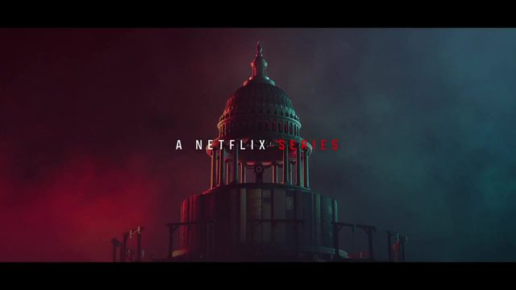
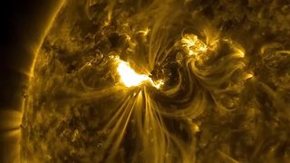
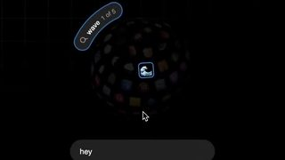
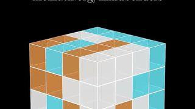

点封面在页面里播放（Vimeo / YouTube / X 需要代理；Vimeo 若没自动开始，再点一下播放键）。觉得好就点「喜欢」，有想法就写在下面的框里保存，我每天出日报前会读，存进偏好和审美库；会多找同类，但每天仍保持类型分散。
目录
- 01it's just one piece, how hard can it be?
- 02stickers + gem refraction（jhey.dev）
- 03morphing popover menu
- 04Bass X Machina Opening Titles
- 05Your Map Shows Antarctica Wrong
- 06Death By Lightning — Opening Titles
- 07Seam Transitions（十一段滚动接缝）
- 08New MacBook Pro with PROLED XDR Display
- 09OT Magnet 1.028 上新动效（Knock knock）
- 10make the app feel faster（ease-in vs ease-out）
- －差一点进的 3 条
- 拆本周最值得学：jhey 一块拼图炸成 3D
01UI动效3D质感
it's just one piece, how hard can it be?
jhey · 11-04 日报 · X 11-04 【看过视频】（11-04 单条深拆时完整看过）
 X
X21 秒全片已下载，抽帧看过
好在哪白底网格上一个一比一的验证码卡片，第 3 秒整张照片炸成约 16 块有厚度、有米色背面的拼图，弹窗同时倒成斜着俯看的桌面；拼完镜头再花 3 秒慢慢立回来。比同类「炸开」好在平面先做得跟真产品一样，快的只有 0.45 秒，前后都安静
可借你说想学的边缘和棱角：每块是拼图轮廓挤出厚度，正反面两种材质，影子跟着高度变大变淡。细拆见文末
02代码动画UI动效3D质感
stickers + gem refraction（jhey.dev）
jhey（@jh3yy） · 11-07 日报 · X 11-06 【看过画面（抽帧）】
25 秒已下载，抽帧看过
界面字未识别；签名手写风
好在哪约 25 秒：黑底网格的站里，贴纸小熊可以拖着走，钻石宝石旁一条红滑条只改折射强度，侧栏写着 Sprite Masks / Gem。比一般「可玩组件」克制：一次只演一种材质，没有粒子
可借你在想法里说以后会用贴纸：讲工具时可以把 logo、图标做成带亮边的贴纸，单独一层拖进画面
03代码动画UI动效
morphing popover menu
jhey（@jh3yy） · 11-06 日报 · X 11-05 【看过画面（抽帧）】
 X
X25 秒已下载，抽帧看过
界面字未识别；标注是手写风
好在哪三点按钮弹成菜单、再胀成卡片，始终是同一个框在变形；后半段用分层爆炸图把菜单、毛玻璃、内容、外框拆开给你看。比一般菜单动效好在外框不跟着内容抖，内容从锚点那一格长出来
可借你标过「爆炸拆解可以参考」：讲一个界面或产品由哪几层组成，就让各层沿一条斜轴错开拉开，旁边配手写标注，讲完再合回去
04片头片尾MG
Bass X Machina Opening Titles
BUCK（Netflix） · 11-04 日报 · YouTube / Stash 11-03 【看过画面（抽帧）】
64 秒全片已下载，抽帧看过；配乐是 Janelle Monáe 的歌
片名字体未识别
好在哪64 秒 Netflix 动画西部剧片头，只用红、黑、米白、深蓝四种颜色，警长星章、星条旗、骑马剪影像宣传海报一样一层层叠出来，结尾粗衬线字里一个刷出来的红 X。比同类片头好在颜色限死，换多少画面都像一套
可借你问过能不能用代码做：剪影和平涂色块用 SVG 或 Three.js 平面一层层叠，大体能做；难的是纸张颗粒和刷痕，要另叠一层纹理
05知识讲解数据可视化
Your Map Shows Antarctica Wrong
Cleo Abram · 11-04 日报 · YouTube 11-03 【看过画面（抽帧）】
 YouTube
YouTube38 秒全片已下载，抽帧看过
好在哪38 秒竖屏：一张南极在中间的 Spilhaus 投影地图平放在桌上，再换成一个地球，洋流用红蓝圆圈和箭头绕着南极转。比纯平面地图讲解好在地图是桌上的实物，有光影和透视
可借你说「地球地图上画箭头线」以后能用：Three.js 地球上沿球面画一条曲线，箭头跟着线头一点点往前长
06片头片尾MG3D质感
Death By Lightning — Opening Titles
KING+COUNTRY · 11-07 日报 · Motionographer 【看过视频】（完整看过）

motionographer.com全片约 49 秒已下载并用看片工具完整看过；今天的细拆
主色暗底 + 青绿/血红分色；字体未识别
好在哪约 49 秒剧集片头：一台自造的机械走马灯，国会穹顶、钢丝独轮、青铜小人、蒸汽火车轮流转过，左边血红、右边青绿两道轮廓光，几乎每刀都踩鼓点硬切。比同类暗调片头好在从不亮全景，只露齿轮一角
可借人名分两层：小号红色职位字加宽字距白色大写名字，放在画面暗角；Three.js 里左右两盏不同颜色的侧光就能打出这种轮廓
07转场代码动画UI动效
Seam Transitions（十一段滚动接缝）
Codrops · 11-05 日报 · Codrops 【看过视频】（完整看过）
 X
X14 秒全片已下载并用看片工具完整看过；今天的细拆
大标题字体未识别（接近 Plus Jakarta Sans / 几何无衬线）
好在哪约 14 秒，11 种章节接缝各 1 秒左右：撕纸墨边、瓷砖碎裂、落字雨、等高线、金缮裂纹……上一屏的底边变成会动的遮罩，下一屏白底从里面顶上来。比淡入淡出和硬切多了一层「材质」
可借科普换章节优先学等高线、碎裂、落字三种；遮罩形状跟着一个 0 到 1 的进度值变就行
08实拍剪辑剪辑节奏
New MacBook Pro with PROLED XDR Display
Apple · 11-03 日报 · YouTube 10-28 【看过视频】（完整看过）
117 秒全片已下载并完整看过
好在哪117 秒产品片：暗棚里掀开屏幕开场，中间甩镜头一路跑过办公室、中庭、森林和悬崖边的桌子，最后甩回暗棚合上屏幕。比同类产品片好在甩镜只当「换场景的门」用，只有讲接口那段才跟鼓点硬切
可借工具实测视频可以首尾都放同一个暗背景的产品特写，中间的使用场景用快速甩镜一个接一个串起来
09字体版式MG
OT Magnet 1.028 上新动效（Knock knock）
Oz Type（用 Cavalry 做） · 11-02 日报 · X 10-31 【看过视频】（完整看过）
42 秒全片已下载并完整看过
好在哪42 秒：近黑底上红、粉、黄、蓝、绿、灰六个色块像对话一样一块接一块叠出来，「Knock knock.」「Who's there?」「Magnet.」，最后绿块里的词不停换。比一般字体宣传好在拿一个敲门笑话当结构，色块就是对话气泡
可借讲版本更新、新功能：每句话一个色块按对话顺序叠上去，最后一块不停换词；Remotion 里一个数组加错开时间的 spring 就够
10UI动效代码动画
make the app feel faster（ease-in vs ease-out）
Emil Kowalski（@emilkowalski） · 11-07 日报 · X 11-06 【看过画面（抽帧）】
25 秒已下载，抽帧看过
字体未识别（接近 Inter / SF Mono 标签）
好在哪约 25 秒白底对照：同一个 Options 按钮弹层，ease-in 版显得钝，ease-out 版快起慢停像落了地，最后画出曲线并给出 cubic-bezier(0.23, 1, 0.32, 1)。比一般缓动教程好在同一个东西左右对比，一眼看出差别
可借你夸过 jhey 拼图「运动曲线的流畅度」，这条是入门答案：打开、弹出类动作默认用强 ease-out，别用 ease-in
差一点进的 3 条

Cleo Abram · 11-07 抽帧看过，你点过喜欢。太阳剖面上沿光子折线写「170,000 YEARS」的路径字很好，但和南极地图同一个作者、同一类，这周放一条

jhey · 11-04 抽帧看过，你点过喜欢。成品居中、代码放角落、彩色标注线连起来，是讲代码原理的好模板；jhey 这周已经进了 3 条

3Blue1Brown · 11-04 完整看过。无关的块压暗不删、快动作后停 1 到 3 秒，手法很好；但这周你踩了三条讲原理的知识讲解，同类先少放
本周最值得学
一块拼图怎么炸成 3D，边缘和棱角从哪来 【看过视频】（11-04 单条深拆时完整看过，爆炸段逐帧看）
选它是因为你在想法里点名要重点拆它，尤其是拼图的边缘、棱角和运动曲线。下面从 11-04 那篇单条深拆里压缩出最能直接用的部分；写「推测」的是从画面倒推的做法，不是作者公布的代码
21 秒怎么走
- 0 到 3 秒：仿真验证码卡片，拖一块拼图进缺口，很平常
- 2.75 秒：标题里「piece」悄悄变成「pieces」，这是爆炸前的预告
- 3.15 到 3.6 秒：照片裂成约 16 块飞出去翻转，弹窗同时向后倒成斜俯视的桌面
- 7 到 11 秒：右上角「24×」角标快进，一块块拼回去
- 11 到 14.5 秒：镜头用约 3 秒慢慢立回正面，比倒下慢 6 倍；最后提示「验证过期」
边缘、棱角和质感从哪来
- 每块不是切开的图片，而是拼图轮廓挤出一点厚度，所以侧面看得到一条边
- 正面贴照片对应的那一块，背面和侧面是米色纸板，翻过来能看出是双面实体
- 柔和顶光，每块下面一块模糊灰影，飞得越高影子越大越淡，高低一眼看出
- 地面是原来的浅灰网格跟着倒下变成的，空间感主要靠它
- 全片只有白灰、一种偏紫的蓝（约 #4A63C8，推测）和照片黑白，红色只在结尾出现一次
运动曲线
- 爆炸第一帧碎片就已经离开原位很远，之后越飞越慢、轻轻落地，没有回弹，像强 ease-out 或阻尼很大的弹簧（推测）
- 每块的方向、翻转角度、落地时间都不一样，0 到 6 帧错开，所以不像机器
- 去的时候 0.45 秒吓你，回来的时候 3 秒让你喘口气；第 10 条 Emil 的 ease-out 对照就是同一个道理
在 Remotion / Three.js 里怎么做
- 卡片部分直接用 HTML/CSS 写，照片切成 4×4 拼图形状
- 每块用拼图轮廓做
Shape，再用 ExtrudeGeometry 挤出约 0.04 的厚度，正面一种材质、背面和侧面米色材质 - 每块用
random(seed) 给固定的飞出方向、高度、翻转和 0 到 6 帧延迟，保证每次渲染一样 - 爆炸和镜头倒下共用一个阻尼大的
spring（起点可试 damping 26、stiffness 180），镜头立回来另用一个更慢的 interpolate - 地面用网格贴图的平面，加 drei 的
ContactShadows 做接触阴影
参数是按画面节奏估的起点，需要自己再调；完整代码草稿在 11-04 单条深拆里
用在「鱼知道」
讲大模型怎么「看图」：先给一张平平的图说「看起来很简单」，然后炸成小块一块块讲（图像切成小块正好就是这个画面），最后拼回去落到结论。镜头倒下表示「进去看看」，立回来表示「回到结论」
本周偏好变化
- 喜欢：jhey 这周被你点了 4 次（拼图、贴纸宝石、菜单变形、emoji 地球），想法里说的都是质感、物理效果和运动曲线；BUCK 片头和 Cleo Abram 的两条也点了。jhey 按规则加进了信源的「用户点名」
- 不要：11-07 你踩了 3 条，都是讲原理的知识讲解（Branch 刷卡原理、3Blue1Brown 交叉熵、jhey 的 :has() 图纸），这类之后少推
- 想问你：这周字体版式、转场、实拍剪辑三类一条都没点喜欢，要不要少推？不想减就不用管，想减在这条下面的想法框里写一句
信源调整建议（等你确认再改）
Motionographer 这周出了两条好片头（KING+COUNTRY、Nexus Studios），建议保持每天看；YouTube 讲原理的长片（Branch Education、3Blue1Brown 长视频）建议降到每周最多一条。同意就在想法框里写「同意」
本周你的反馈（原话）
- 11-04 Bass X Machina（BUCK）♥：这种风格之前没见过，感觉可以做一些炫技镜头，但是这能用代码实现吗
- 11-04 Your Map Shows Antarctica Wrong（Cleo Abram）♥：地球地图上画箭头线这个效果很好 / 也许以后做类似的题材能用上
- 11-04 it's just one piece, how hard can it be?（jhey）♥：这个画面质感还有运动曲线的流畅度，我觉得很好，我很喜欢这种风格。这个可以重点拆解一下，以后应该能用得上，包括画面元素的细节，例如拼图的边缘、棱角，这些都是我目前所欠缺的
- 11-06 morphing popover menu（jhey）♥：爆炸拆解可以参考
- 11-07 stickers + gem refraction（jhey）♥：它这个贴纸的效果还挺有意思的，包括它这个接起来的物理效果，还有对应的音效。这个可能我以后做视频的时候会用到这个贴纸。
- 只点了喜欢、没写想法：11-04 emoji 地球（jhey）、11-07 The Sun Is Weirder Than You Think（Cleo Abram）
- 点了踩：11-07 How does Tap to Pay Work?（Branch Education）、11-07 But what is cross-entropy?（3Blue1Brown）、11-07 :has() browser process sheets（jhey）
反馈方式
喜欢就点心，不喜欢点踩，有想法写在每条下面的「想法」框里点保存，下次挑片前我会先读
看原帖 ↗11-04 单条深拆全文 ↗